Setting up network updates with Github
If you're reading this page, you've probably completed/nearly completed a ghost and are ready to set up network updates! It can be a bit intimidating at first, but I promise, once you do the initial setup it becomes much easier!
The very first step is to create a Github account if you don't have one. It will ask you what kind of work you do; your choices shouldn't really change anything, just pick what best fits you.
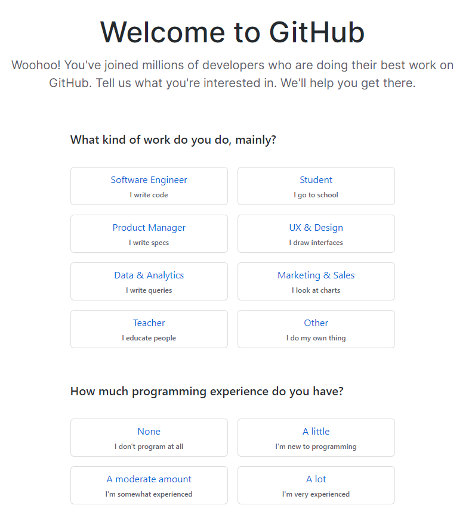You'll have to verify your account, and then it will present you with 3 options. You'll want to pick the one that says 'Create a repository'. Your repository will be the folder your ghost files (and possibly website) go in!
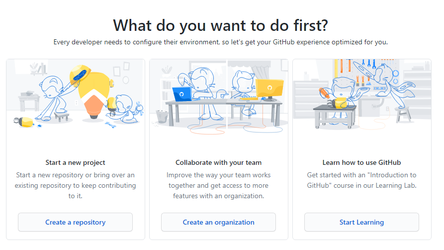You'll then be presented with some options for your new repository. Fill in the repository name as whatever you'd like, but don't make it your username. It should preferably be something short and memorable. You could just call it 'Ukagaka' if you'd like! If you're planning to host more than just ghosts, I wouldn't call it 'Ghost', just to avoid confusion later.
If you want to add a readme to tell people on Github what these files are/what your website is about, feel free to tick the readme box at the bottom. You can also pick a license if you'd like.
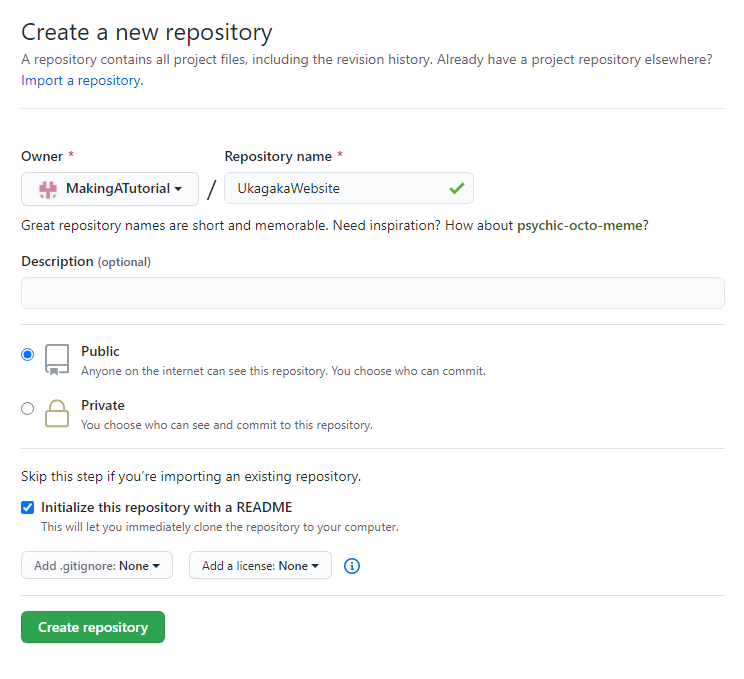Once you've set things up, click on Create repository. It will then take you to the online version of the folder you've just made. Next, we're going to clone that folder to your local computer so you can add things to it easily!
In theory, you could just upload files through the Github website, but I do not recommend it. Trust me, Github desktop will make your life so much easier.
As an aside, if you decided to add a readme, you can edit it from this page. Make sure you click commit changes when you're done!
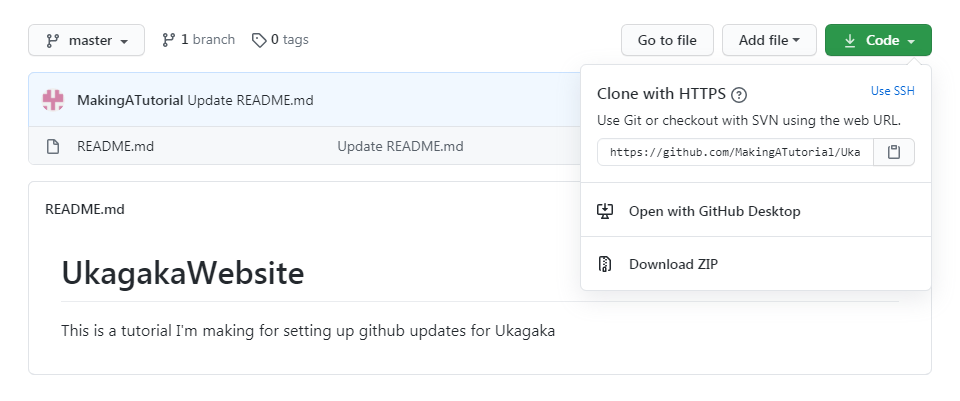Next, you'll need to click on that green dropdown in the right corner that says Code. Then you'll click Open with GitHub Desktop, which should take you to a download page for Gitub Desktop if you don't have it. If it doesn't, here's a link.
It should only take a minute or two to install, and then you should see this screen or one like it.
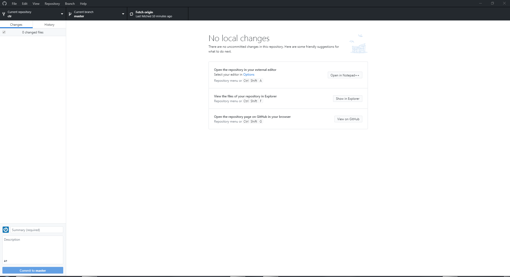This might look a bit confusing, but I promise you only need to learn to do a few key things. First, we need to get your repository onto your computer!
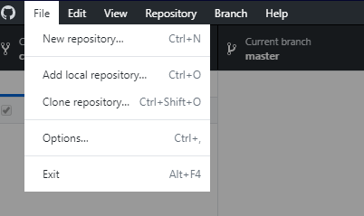In the top left, click File and then click Clone repository. It will ask you to sign in to Github on your computer. Do that, then click File and Clone repository again if it doesn't reopen it automatically. You should see this page.
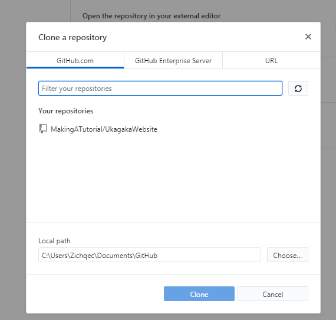Click on the repository you made earlier, and then click Clone. You can pick a different local path if you'd like, but I just leave mine where it is.
Now you have a copy of your repository on your computer, and you can make changes to it as you like! To open that folder you can click the Show in Explorer button on Github desktop.
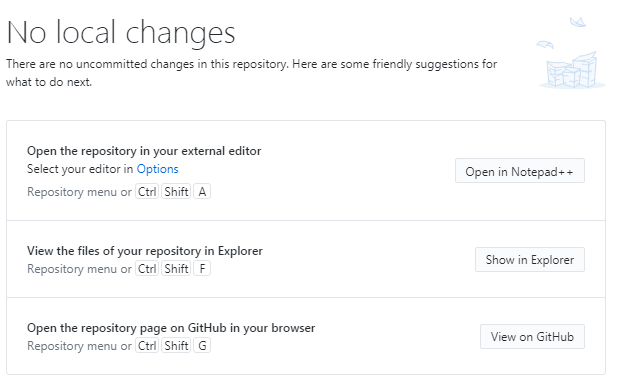Now we're going to add your ghost's files. First of all, I'd recommend making a folder inside of your repository called Updates. That way, you can keep your update files separate from any other files (like website files) that you may add. Inside of the Updates folder, copy your ghost's entire folder. The file tree should look something like this.
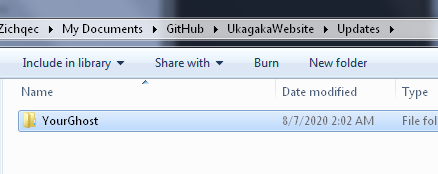Inside that folder should be your Shell and Ghost folder, as well as install.txt, readme.txt, your thumbnail, all that. It should be a perfect copy of your ghost's most recent files. All of these files are what your users will be downloading when they ask their ghost to update.
Now then, there is a problem with this. Before you create .nar files and update files, you need to remove your own save so that your users don't have their progress erased. This is very simple, but you need to remember to do it each time. Go into YourGhost\ghost\master, which should look a bit like this.
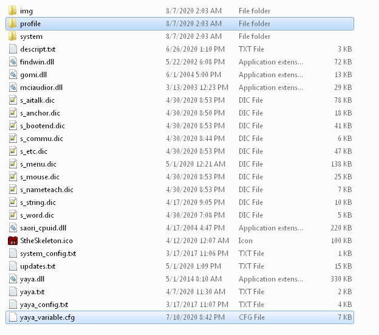The two highlighted files are the ones you need to delete. yaya_variable.cfg is all the variables that the ghost has set while you've been running it, and the profile folder has to do with things like where you've dragged the ghost on screen, I believe. Since this is a copy of your ghost's files (or it should be), you can just delete them without losing your own save!
(Note, this tutorial assumes you're using YAYA. If you're using AYA or any other ghost language, the file you'll have to delete will be different. I'm not sure what it will be called, but you'll need to find out before you move on.)
Just one more thing to set up before your ghost is prepared for updates. You need to set up the homeurl in string.dic. When using Github, there are two possible URLs. Sometimes one works and the other doesn't, and I'm not really sure why. I believe the github.io URL only works if you have Github pages set up (see below), but it's been a bit finicky. Give one a try, and if it doesn't work, try the other. The link formats are like so:
Link format A: https://raw.githubusercontent.com/YourUsername/YourRepository/master/Updates/YourGhost/
Link format B: https://YourUsername.github.io/YourRepository/Updates/YourGhost/
Please note, sometimes the word master in the url needs to be capitalized, and sometimes it doesn't! I'm not sure why that is. Make sure you look at your repository's URL carefully, and if updates aren't working, try changing that! Also, don't forget to change the homeurl in the string.dic that's in your repository so they both match.
Your string.dic should look something like this.
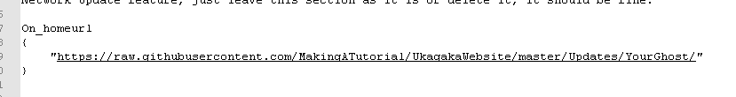Now that your files are ready, drag and drop the ghost's entire folder onto your ghost (or any ghost)! They should give you a few options. To create a file that other people can use to install your ghost, you'll want to create a .nar file. To create files that will allow users to update, create an update file. The update files will automatically be placed in the appropriate folders.
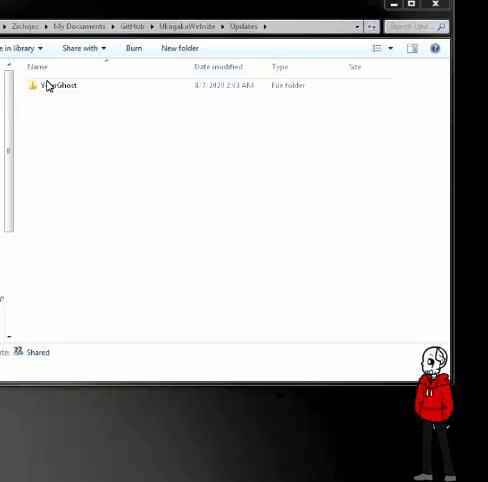Once you've made an update file, you're ready to push your update! Changes you make to your repository are not automatically reflected online. Any time you've changed files, you'll see the changes in Github desktop, like so.
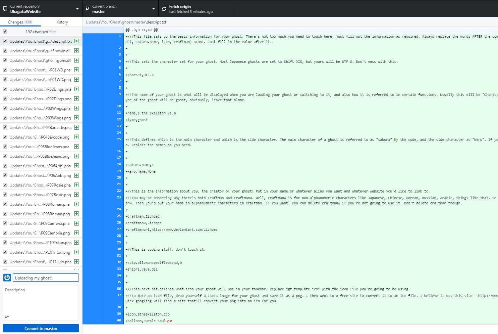In the bottom left you'll see a couple text boxes and a button that says Commit to master. You always have to add a summary message. Something like 'My Ghost v1.0.0' would do fine; it's best to make these messages something clear and concise. Don't stress too much over the message though!
Click Commit to master and your changes will be saved to your repository! Github will actually keep backups of every commit you make, so if something breaks later you can roll back.
Just one more step, and you'll be home free.
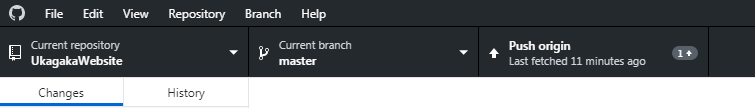See this button that says Push origin? That button will send your latest files to the online version of your repository. Once you click this button, your changes will be live and users will be able to update. If you're ready, go for it!
I will note that in my experience, it's usually best to wait 1-2 minutes after pushing files to attempt an update on the ghost.
Congratulations! If you have no interest in creating a website for your ghost, then you're done! To push future updates, all you need to do is follow the last few steps again. I recommend always deleting the old files and copying in the new ones, just to make sure you don't miss anything.
Always make sure you test your updates before you announce them! Updating is a VERY finicky thing, and sometimes SSP just messes up. But Github is a solid host, if you can get this set up then your ghost's files should be secure for a long time to come.